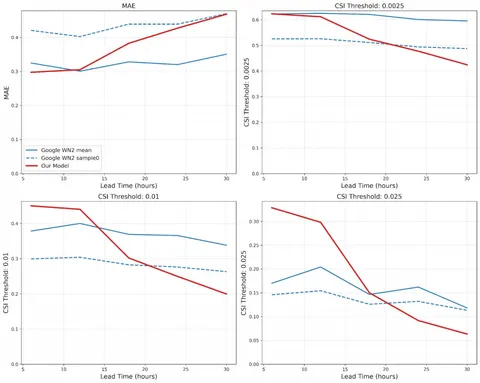
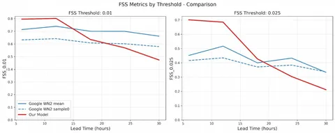

Новая нейросеть для глобального прогноза погоды рассчитывает 70 ключевых характеристик атмосферы на 10 суток вперёд с часовым шагом. В этом посте — немного «внутрянки» о том, что нового появилось в Нейрометеуме.
Во-первых, модель Яндекса сделали быстрой и автономной. Если численным методам нужны часы на расчёт, то эта нейросеть справляется за несколько минут. К тому же в расчёте нет зависимости от внешних данных метеорологических центров — всё рассчитывается самостоятельно, но пока что зависимость сохраняется в данных для старта.
Во-вторых, использовали инновационный подход к обучению модели. Архитектурно за основу взяли Aurora (Microsoft), а от Pangu Weather (Huawei) переняли идею обучать несколько моделей для разных временных горизонтов, а не одну. При этом смогли решить проблему несогласованности прогнозов благодаря авторегрессии в латентном пространстве. Эксперименты с гиперпараметрами (число блоков, «голов» и так далее) показали, что качество достигает насыщения. В итоге модель превзошла Aurora по числу параметров — у Нейрометеума их 1,5 млрд.
В-третьих, повысили точность прогноза осадков. В Яндекс Погоде придумали, как эффективнее работать с переменной «осадки» (zero-inflated distribution). Вот что для этого сделали:
— использовали нормировку/перемасштабирование (в основе — паттерн из MetNet от Google);
— применили специальную функцию активации;
— разработали новые функции потерь (MWAE и лосс на основе Центра Масс — CoM).
А вот и результаты:
— CSI по сильным осадкам вырос на 50% относительно бэйзлайна и более чем вдвое относительно общепринятого подхода;
— метрика bias снизилась в 10 раз и достигла уровня численных моделей;
— в сравнении с последней моделью Google (WeatherNext2) — модель показывает сопоставимое или более высокое качество прогноза осадков на ближайшие 12–18 часов.
Сейчас прогнозы Нейрометеума используют как входные данные для профильной модели осадков в Яндекс Погоде.
Подробнее о том, как устроена новая нейросеть глобального прогноза погоды, читайте на Хабре.
ML Underhood
